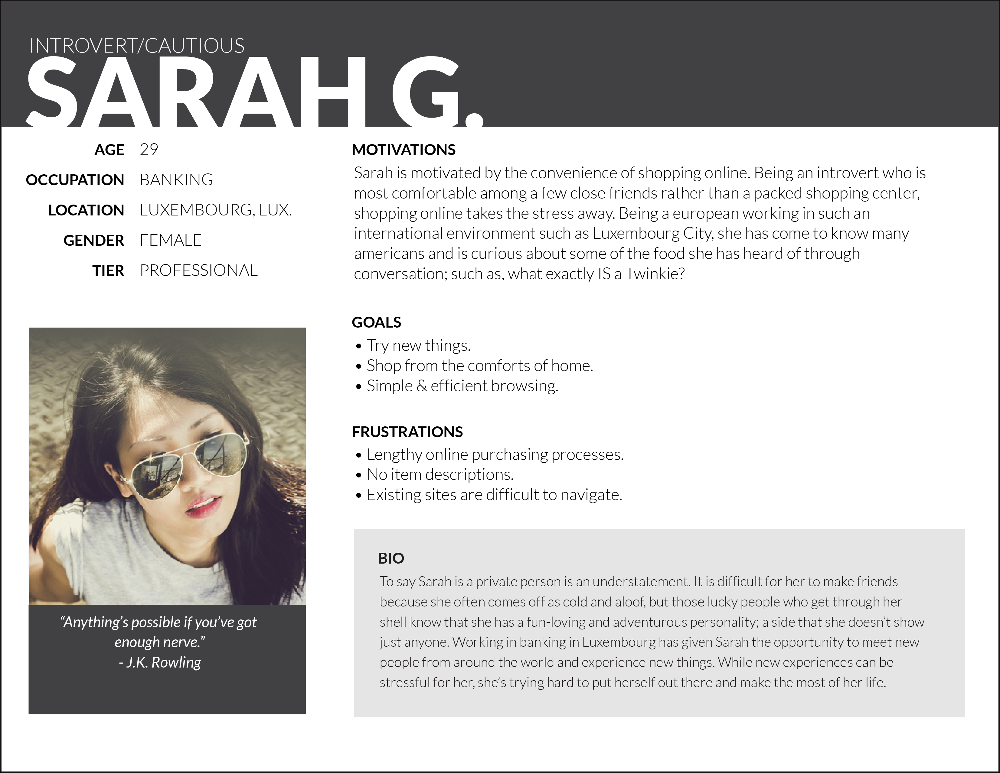
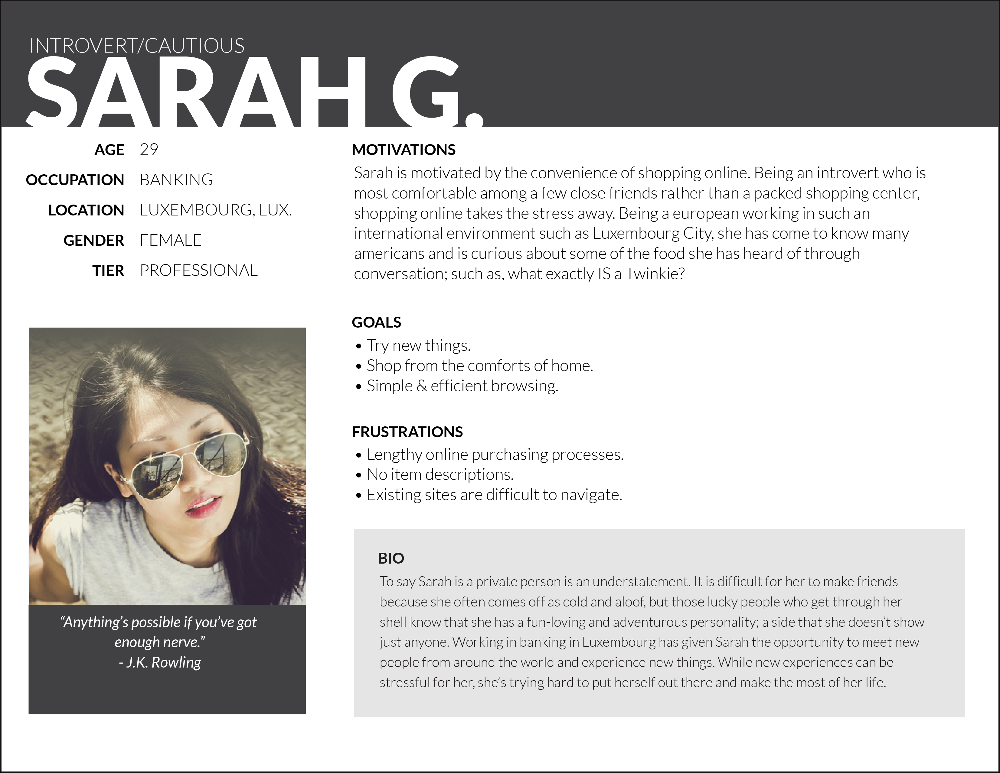

PROJECT 01
ABOUT
American Pantry.
An e-commerce site catering to the needs of the American expat.
UX/UI | VISUAL DESIGN | BRANDING
CASE STUDY
The expat life has many blessings and challenges. You may not realize that many of the things that you loved from your home country will not be available abroad until you’ve already moved. At this time in history, when online shopping is a fact of life, it should be easy to find those products that you love. There exist a few online shopping experiences created for expats seeking a little taste of home, but none that display elegant design with a clean and responsive shopping experience.
The Problem
The problem was to create an e-commerce site catering to the needs of the American expat living abroad. This site should allow users to create an account as well as access that account by signing in via social media. The user should be able to view suggested items, to navigate categories and leave product reviews. Because of the international use of this site, several language options should be provided.
The Solution
American Pantry provides a clean, simple solution for those of us seeking a little taste of home. With simplicity in mind, the site delivers functionality without a confusing interface, while still generating enough interest to keep the user engaged.
User Research
Research showed that a majority of those questioned shopped online and 48% of those shoppers said that they did so often. Maybe not surprising for an online survey, but zero people said that they never shopped online; however, 60% of people questioned have never shopped online for grocery items. For a site like American Pantry, the majority felt that snack foods and other ready to eat items were the most important to have available, while breads, cleaning supplies and stationery were relatively unwanted. It was surprising that few people were interested in products for american holidays and american-themed parties.

Know Your User
After the survey, I developed 3 personas that would guide me in developing the website with the average user's interests in mind. I created 3 very different potential users: one a tech-savvy online shopper, one international traveller and a rather introverted and shy individual seeking a way to purchase outside of public view.
 

Know Your Competitor
It was at this point that I needed to begin researching amy competitors to find out what they did well, or didn't do so great at. I managed to find a handful of sites similar to American Pantry, but none that were particularly well-designed. Most were exrtremely bloated with content, such as recipe sections that were mostly empty, or page-long business guarantees with excessive fine print. I chose 3 to compare side-by-side.

Information Architecture
Using what I learned from the questionnaire and the competitor analysis, I came up with a comprehensive list of user stories that breaks down what I feel the research shows users would like in such a website. After gathering the data, it was time to start developing the stories that would keep me on track during the design process.
With what I knew about my users via the survey and the personas, as well as the information gathered via competitor analysis, I put together user stories to break down what users would like to see in this website. Afterwards, I created several user flows to manage the process of moving through several processes on the site itself. With the collected data and the user flows, I created a very rough wireframe on Balsamiq.
Visual Design
With the research coming to a close and with finishing the wireframes, I had a clear vision of how the site should be laid out. Next, it was time to work on the branding and other visual aspects of the design. Using mindmaps, I created both the name and how I felt I would design the logo and settled with the saying "American as Apple Pie" as a launching point.
The logo design went through an incredible amount of iteration until finally settling on something much more simple than what I had initially come up with. During this process, I also created a style guide. I wanted to choose a theme reminiscent of red, white & blue without being too cheezy, so I chose deeper reds and blues than the actual national colors.

The Prototype
Much like the logo design, the visual design on the HiFi mockups went through many iterations. The initial setup seemed to sparce. I condensed a bit and added a lot more product, trying to attain the sort of look one would see when physically looking at a shelf of product in a brick and mortar shop. After some trial and error, I came up with a solution that I felt evoked the feel of walking through a physical store, while remaining clean and simple in design.
VIEW THE PROTOTYPE ON INVISION
The Conclusion
In conclusion, my biggest struggle was with time. I can see and value the importance of creating and adhering to a schedule, especially with design in mind because it's very easy to go back and re-design something over and over again before being happy with the final product. I also found that I was designing things far too larger and had to re-scale the entire project. If I had more time, I would like to evaluate the coloe just a bit more as I feel that the white background just isn't very interesting.